Take-home Exercise 1: Geospatial Analytics for Public Good Spatial Patterns of New Businesses in Singapore
1 Overview
1.1 Setting the scene
Singapore has developed into one of the world’s leading global business hubs. Strategic business locations are central to this development, as they determine access to talent, infrastructure, and markets. New firm formations are not only a sign of economic vitality but also provide critical insights into how the city’s urban fabric evolves over time.
The spatial distribution of businesses reveals important patterns about urban development, economic clustering, and resource allocation. Different business types tend to locate in specific areas based on their operational needs, regulatory requirements, and market access.
Studying the spatial and temporal patterns of new business establishments allows us to understand how Singapore’s business landscape is evolving. This knowledge is crucial for urban planners, policymakers, and investors seeking to enhance competitiveness, foster sustainable development, and maintain Singapore’s global hub status.
1.2 Objectives
The objective of this study is to investigate the spatial and spatio-temporal patterns of new business establishments in Singapore, focusing on the technology (SSIC 62), finance (SSIC 64), and research & development (R&D, SSIC 72) sectors.
The specific objectives are as follows:
To identify spatial clusters and temporal patterns of firm establishments in the technology, finance, and R&D sectors between January 2024 and June 2025, using kernel density estimation (KDE) and spatio-temporal methods.
To explore second-order interactions, such as attraction or repulsion effects, between technology, R&D, and finance firms across different urban zones.
To examine how these dynamics reflect Singapore’s broader urban development patterns, highlighting areas of concentration or dispersion in the urban landscape.
By linking spatial analytics with urban planning, the findings will provide actionable insights for supporting Singapore’s continued growth as a knowledge-driven economy.
2. Getting Started
2.1 The Packages
In this exercise, we will use following packages:
| Package | Description |
|---|---|
| sf | Provides functions to manage, process, and manipulate Simple Features, a formal geospatial data standard that specifies a storage and access model of spatial geometries such as points, lines, and polygons. Essential for converting business addresses to spatial coordinates and handling geospatial data throughout the analysis. |
| spatstat | Provides functions for spatial statistics with a strong focus on analyzing spatial point patterns. Used for performing kernel density estimation (KDE), G-function, K-function, and Cross-K function analysis to identify clustering patterns and spatial interactions between business sectors. |
| tidyverse | Provides a collection of functions for performing data science tasks such as importing, tidying, wrangling data, and creating statistical visualizations. Essential for data preprocessing, filtering by SSIC codes, and creating temporal analysis plots. |
| tmap | Provides functions for plotting cartographic quality static point pattern maps or interactive maps using leaflet API. Used for creating professional-quality maps showing business distributions, density patterns, and regional analysis results. |
| httr & jsonlite | Used for making HTTP requests to Singapore’s OneMap API for geocoding business addresses. Essential for converting postal codes to precise latitude and longitude coordinates. |
| spdep | Provides functions for spatial dependence analysis including spatial weights matrices, Global and Local Moran’s I, and Getis-Ord Gi* statistics. Used for advanced spatial autocorrelation analysis to identify hotspots and spatial clustering patterns. |
| plotly | Provides functions for creating interactive 3D visualizations and advanced statistical plots. Used for creating dynamic visualizations that enhance understanding of spatial patterns. |
| gganimate | Provides functions for creating animated visualizations showing temporal changes in business registration patterns. Essential for spatio-temporal analysis and demonstrating how business patterns evolve over time. |
| lubridate | Provides functions for working with date and time data. Used for extracting temporal components (year, month, day) from business registration dates and creating time-based analysis. |
| classInt | Provides functions for choosing univariate class intervals for mapping or other graphics purposes. Used for creating meaningful color breaks in density maps and statistical visualizations. |
| transformr | Provides functions for smooth interpolation between different states in animated visualizations. Used in conjunction with gganimate to create smooth transitions in spatio-temporal animations. |
# Load packages
pacman::p_load(sf, spNetwork, spatstat, raster, tmap, tidyverse, classInt, gifski, rvest, lubridate, httr, jsonlite, spdep, plotly, gganimate, transformr)
tmap_mode("plot")## i tmap mode set to "plot".2.2 Data
| Dataset Name | Description | Format | Source |
|---|---|---|---|
| ACRA – Information on Corporate Entities (2024–2025) | Comprehensive business registration data from Singapore’s Accounting and Corporate Regulatory Authority, containing detailed information about all registered corporate entities. The dataset includes company names, incorporation dates, registered addresses with postal codes, and primary SSIC (Singapore Standard Industrial Classification) codes. This dataset serves as the foundation for identifying and analyzing businesses in the technology (SSIC 62), finance (SSIC 64), and research & development (SSIC 72) sectors. The temporal coverage from January 2024 to June 2025 enables spatio-temporal analysis of new business formations. | CSV (27 files, alphabetically organized, merged) | data.gov.sg |
| SSIC 2020 Classification | Official industry classification reference published by Singapore’s Department of Statistics, providing standardized codes and descriptions for all economic activities. This classification system enables precise identification and categorization of businesses by their primary economic activities. Specifically used to filter and classify firms into technology (62), finance (64), and R&D (72) sectors, ensuring accurate sector-based analysis and comparison. | Excel | Department of Statistics Singapore |
| Singapore Subzone Boundaries (Master Plan 2019) | High-resolution geospatial dataset containing Singapore’s administrative and planning subzone boundaries from the Urban Redevelopment Authority’s Master Plan. This dataset provides detailed spatial units for mapping business clusters, conducting regional analysis, and performing spatial statistical tests. The subzone boundaries enable aggregation of business data at appropriate spatial scales for urban planning insights and identification of specialized business districts. | KML (converted to ESRI Shapefile) | Urban Redevelopment Authority (URA) / data.gov.sg |
2.3 Data Wrangling
The data wrangling process involves several critical steps to prepare the raw ACRA data for spatial analysis. This section outlines the systematic approach to data import, cleaning, filtering, and geocoding that transforms the raw business registration data into a spatially-enabled dataset suitable for geospatial analytics.
2.3.1 Data Import & Merging
The ACRA dataset consists of 27 CSV files organized alphabetically, requiring systematic import and merging. This approach ensures efficient processing of large datasets while maintaining data integrity. The merging process combines all business entities into a single comprehensive dataset for subsequent analysis.
2.3.2 Filtering by Date
Temporal filtering is essential to focus on recent business formations that reflect current economic trends and spatial patterns. The analysis targets businesses registered between January 1, 2024, and June 30, 2025, capturing the most recent 18-month period of business activity. This temporal scope enables analysis of contemporary spatial patterns while providing sufficient data volume for robust statistical analysis.
The lubridate package is used to convert date strings to proper date objects, ensuring accurate temporal filtering and subsequent time-based analysis.
2.3.3 Filtering by Industry (SSIC Codes 62, 64, 72)
Industry filtering focuses on three key sectors that represent Singapore’s knowledge economy: Technology (SSIC 62), Finance (SSIC 64), and Research & Development (SSIC 72). These sectors are selected because they represent high-value economic activities that are crucial for Singapore’s position as a global business hub. The filtering process uses string matching on SSIC codes to ensure comprehensive coverage of all relevant business activities within each sector.
Postal code cleaning is performed to ensure data quality for subsequent geocoding. Only valid 6-digit Singapore postal codes are retained, as these are required for accurate geocoding using Singapore’s OneMap API.
2.3.4 Geocoding & Conversion to sf
Geocoding transforms postal codes into precise spatial coordinates, enabling spatial analysis of business locations. Singapore’s OneMap API provides accurate geocoding services for Singapore postal codes, converting 6-digit postal codes to latitude and longitude coordinates. This process is essential for creating spatial point features that can be analyzed using geospatial methods.
The geocoding process involves batch processing of unique postal codes to minimize API calls and ensure efficient data processing. The resulting coordinates are then used to create Simple Features (sf) objects, which are the standard format for spatial data analysis in R.
3. Spatial Analysis
Spatial analysis forms the core of this study, employing advanced geospatial statistical methods to identify patterns, clusters, and relationships in business location data. This section systematically applies spatial point pattern analysis techniques to understand how technology, finance, and R&D businesses are distributed across Singapore’s urban landscape.
3.1 Data Preparation for Spatial Analysis
Before conducting spatial statistical analyses, the data must be properly prepared and formatted for geospatial processing. This involves loading administrative boundary data, converting spatial formats, and ensuring coordinate system compatibility.
3.1.1 Loading Singapore Subzone Boundary Data
Singapore’s subzone boundaries provide the essential spatial framework for conducting regional analysis and spatial statistical tests. The Master Plan 2019 subzone boundaries are loaded from KML format and transformed to Singapore’s official coordinate reference system (SVY21, EPSG:3414). This ensures accurate spatial analysis and proper integration with business location data.
The KML file contains embedded HTML descriptions that require parsing to extract administrative information such as region names, planning area names, and subzone identifiers. This administrative hierarchy is crucial for conducting regional-level analysis and understanding spatial patterns at different scales.
3.1.2 Converting SF Data to spatstat ppp Format
The conversion from Simple Features (sf) to spatstat’s point pattern (ppp) format is essential for performing spatial point pattern analysis. The spatstat package requires data in ppp format to conduct kernel density estimation, spatial clustering tests, and other advanced spatial statistical analyses.
The conversion process involves several critical steps: creating a study window (owin) from Singapore’s boundary, converting spatial points to ppp format, and rescaling coordinates to kilometers for better interpretability of bandwidth parameters. The study window ensures that all spatial analyses are constrained to Singapore’s geographical boundaries, preventing edge effects and ensuring accurate statistical inference.
# Load required packages for spatial analysis
pacman::p_load(spatstat, terra, classInt)
# Load geocoded innovation data
acra_innovation_sf <- readRDS("data/rds/acra_innovation_sf.rds")
# Load Singapore subzone boundaries
singapore_subzones <- readRDS("data/rds/singapore_subzones.rds")
# Create study window (owin) from Singapore boundary
singapore_owin <- as.owin(singapore_subzones)
# Convert SF data to ppp format
acra_innovation_ppp <- as.ppp(acra_innovation_sf)
# Combine point events with study window
acra_innovation_ppp <- acra_innovation_ppp[singapore_owin]
# Rescale to kilometers for better bandwidth interpretation
acra_innovation_ppp_km <- rescale.ppp(acra_innovation_ppp, 1000, "km")
# Check the converted data
summary(acra_innovation_ppp_km)## Warning: some mark values are NA in the point pattern object## Marked planar point pattern: 15954 points
## Average intensity 23.82913 points per square km
##
## Coordinates are given to 15 decimal places
##
## Mark variables: uen, company_name, registration_incorporation_date,
## primary_ssic_code, address, postal_code, sector, postal_code_clean, SEARCHVAL,
## BLK_NO, ROAD_NAME, BUILDING, ADDRESS, LATITUDE, LONGITUDE, input_postcode,
## SEARCHVAL.1, BLK_NO.1, ROAD_NAME.1, BUILDING.1, ADDRESS.1, POSTAL.1, X.1, Y.1,
## LATITUDE.1, LONGITUDE.1, SEARCHVAL.2, BLK_NO.2, ROAD_NAME.2, BUILDING.2,
## ADDRESS.2, POSTAL.2, X.2, Y.2, LATITUDE.2, LONGITUDE.2, SEARCHVAL.3, BLK_NO.3,
## ROAD_NAME.3, BUILDING.3, ADDRESS.3, POSTAL.3, X.3, Y.3, LATITUDE.3,
## LONGITUDE.3, SEARCHVAL.4, BLK_NO.4, ROAD_NAME.4, BUILDING.4, ADDRESS.4,
## POSTAL.4, X.4, Y.4, LATITUDE.4, LONGITUDE.4, SEARCHVAL.5, BLK_NO.5,
## ROAD_NAME.5, BUILDING.5, ADDRESS.5, POSTAL.5, X.5, Y.5, LATITUDE.5,
## LONGITUDE.5, SEARCHVAL.6, BLK_NO.6, ROAD_NAME.6, BUILDING.6, ADDRESS.6,
## POSTAL.6, X.6, Y.6, LATITUDE.6, LONGITUDE.6, SEARCHVAL.7, BLK_NO.7,
## ROAD_NAME.7, BUILDING.7, ADDRESS.7, POSTAL.7, X.7, Y.7, LATITUDE.7,
## LONGITUDE.7, SEARCHVAL.8, BLK_NO.8, ROAD_NAME.8, BUILDING.8, ADDRESS.8,
## POSTAL.8, X.8, Y.8, LATITUDE.8, LONGITUDE.8, SEARCHVAL.9, BLK_NO.9,
## ROAD_NAME.9, BUILDING.9, ADDRESS.9, POSTAL.9, X.9, Y.9, LATITUDE.9, LONGITUDE.9
## Summary:
## uen company_name registration_incorporation_date
## Length:15954 Length:15954 Min. :2024-01-01
## Class :character Class :character 1st Qu.:2024-05-21
## Mode :character Mode :character Median :2024-10-02
## Mean :2024-10-03
## 3rd Qu.:2025-02-20
## Max. :2025-06-30
## primary_ssic_code address postal_code sector
## Length:15954 Length:15954 Length:15954 Length:15954
## Class :character Class :character Class :character Class :character
## Mode :character Mode :character Mode :character Mode :character
##
##
##
## postal_code_clean SEARCHVAL BLK_NO ROAD_NAME
## Length:15954 Length:15954 Length:15954 Length:15954
## Class :character Class :character Class :character Class :character
## Mode :character Mode :character Mode :character Mode :character
##
##
##
## BUILDING ADDRESS LATITUDE LONGITUDE
## Length:15954 Length:15954 Length:15954 Length:15954
## Class :character Class :character Class :character Class :character
## Mode :character Mode :character Mode :character Mode :character
##
##
##
## input_postcode SEARCHVAL.1 BLK_NO.1 ROAD_NAME.1
## Length:15954 Length:15954 Length:15954 Length:15954
## Class :character Class :character Class :character Class :character
## Mode :character Mode :character Mode :character Mode :character
##
##
##
## BUILDING.1 ADDRESS.1 POSTAL.1 X.1
## Length:15954 Length:15954 Length:15954 Length:15954
## Class :character Class :character Class :character Class :character
## Mode :character Mode :character Mode :character Mode :character
##
##
##
## Y.1 LATITUDE.1 LONGITUDE.1 SEARCHVAL.2
## Length:15954 Length:15954 Length:15954 Length:15954
## Class :character Class :character Class :character Class :character
## Mode :character Mode :character Mode :character Mode :character
##
##
##
## BLK_NO.2 ROAD_NAME.2 BUILDING.2 ADDRESS.2
## Length:15954 Length:15954 Length:15954 Length:15954
## Class :character Class :character Class :character Class :character
## Mode :character Mode :character Mode :character Mode :character
##
##
##
## POSTAL.2 X.2 Y.2 LATITUDE.2
## Length:15954 Length:15954 Length:15954 Length:15954
## Class :character Class :character Class :character Class :character
## Mode :character Mode :character Mode :character Mode :character
##
##
##
## LONGITUDE.2 SEARCHVAL.3 BLK_NO.3 ROAD_NAME.3
## Length:15954 Length:15954 Length:15954 Length:15954
## Class :character Class :character Class :character Class :character
## Mode :character Mode :character Mode :character Mode :character
##
##
##
## BUILDING.3 ADDRESS.3 POSTAL.3 X.3
## Length:15954 Length:15954 Length:15954 Length:15954
## Class :character Class :character Class :character Class :character
## Mode :character Mode :character Mode :character Mode :character
##
##
##
## Y.3 LATITUDE.3 LONGITUDE.3 SEARCHVAL.4
## Length:15954 Length:15954 Length:15954 Length:15954
## Class :character Class :character Class :character Class :character
## Mode :character Mode :character Mode :character Mode :character
##
##
##
## BLK_NO.4 ROAD_NAME.4 BUILDING.4 ADDRESS.4
## Length:15954 Length:15954 Length:15954 Length:15954
## Class :character Class :character Class :character Class :character
## Mode :character Mode :character Mode :character Mode :character
##
##
##
## POSTAL.4 X.4 Y.4 LATITUDE.4
## Length:15954 Length:15954 Length:15954 Length:15954
## Class :character Class :character Class :character Class :character
## Mode :character Mode :character Mode :character Mode :character
##
##
##
## LONGITUDE.4 SEARCHVAL.5 BLK_NO.5 ROAD_NAME.5
## Length:15954 Length:15954 Length:15954 Length:15954
## Class :character Class :character Class :character Class :character
## Mode :character Mode :character Mode :character Mode :character
##
##
##
## BUILDING.5 ADDRESS.5 POSTAL.5 X.5
## Length:15954 Length:15954 Length:15954 Length:15954
## Class :character Class :character Class :character Class :character
## Mode :character Mode :character Mode :character Mode :character
##
##
##
## Y.5 LATITUDE.5 LONGITUDE.5 SEARCHVAL.6
## Length:15954 Length:15954 Length:15954 Length:15954
## Class :character Class :character Class :character Class :character
## Mode :character Mode :character Mode :character Mode :character
##
##
##
## BLK_NO.6 ROAD_NAME.6 BUILDING.6 ADDRESS.6
## Length:15954 Length:15954 Length:15954 Length:15954
## Class :character Class :character Class :character Class :character
## Mode :character Mode :character Mode :character Mode :character
##
##
##
## POSTAL.6 X.6 Y.6 LATITUDE.6
## Length:15954 Length:15954 Length:15954 Length:15954
## Class :character Class :character Class :character Class :character
## Mode :character Mode :character Mode :character Mode :character
##
##
##
## LONGITUDE.6 SEARCHVAL.7 BLK_NO.7 ROAD_NAME.7
## Length:15954 Length:15954 Length:15954 Length:15954
## Class :character Class :character Class :character Class :character
## Mode :character Mode :character Mode :character Mode :character
##
##
##
## BUILDING.7 ADDRESS.7 POSTAL.7 X.7
## Length:15954 Length:15954 Length:15954 Length:15954
## Class :character Class :character Class :character Class :character
## Mode :character Mode :character Mode :character Mode :character
##
##
##
## Y.7 LATITUDE.7 LONGITUDE.7 SEARCHVAL.8
## Length:15954 Length:15954 Length:15954 Length:15954
## Class :character Class :character Class :character Class :character
## Mode :character Mode :character Mode :character Mode :character
##
##
##
## BLK_NO.8 ROAD_NAME.8 BUILDING.8 ADDRESS.8
## Length:15954 Length:15954 Length:15954 Length:15954
## Class :character Class :character Class :character Class :character
## Mode :character Mode :character Mode :character Mode :character
##
##
##
## POSTAL.8 X.8 Y.8 LATITUDE.8
## Length:15954 Length:15954 Length:15954 Length:15954
## Class :character Class :character Class :character Class :character
## Mode :character Mode :character Mode :character Mode :character
##
##
##
## LONGITUDE.8 SEARCHVAL.9 BLK_NO.9 ROAD_NAME.9
## Length:15954 Length:15954 Length:15954 Length:15954
## Class :character Class :character Class :character Class :character
## Mode :character Mode :character Mode :character Mode :character
##
##
##
## BUILDING.9 ADDRESS.9 POSTAL.9 X.9
## Length:15954 Length:15954 Length:15954 Length:15954
## Class :character Class :character Class :character Class :character
## Mode :character Mode :character Mode :character Mode :character
##
##
##
## Y.9 LATITUDE.9 LONGITUDE.9
## Length:15954 Length:15954 Length:15954
## Class :character Class :character Class :character
## Mode :character Mode :character Mode :character
##
##
##
##
## Window: polygonal boundary
## 41 separate polygons (26 holes)
## vertices area relative.area
## polygon 1 285 1.61128e+00 2.41e-03
## polygon 2 27 1.50315e-02 2.25e-05
## polygon 3 (hole) 41 -4.01660e-02 -6.00e-05
## polygon 4 (hole) 317 -5.11280e-02 -7.64e-05
## polygon 5 (hole) 3 -4.14100e-10 -6.19e-13
## polygon 6 30 2.80002e-02 4.18e-05
## polygon 7 (hole) 4 -2.86396e-07 -4.28e-10
## polygon 8 (hole) 3 -1.81440e-10 -2.71e-13
## polygon 9 (hole) 3 -5.99531e-10 -8.95e-13
## polygon 10 (hole) 3 -3.04560e-10 -4.55e-13
## polygon 11 (hole) 3 -4.46108e-10 -6.66e-13
## polygon 12 (hole) 5 -2.44408e-10 -3.65e-13
## polygon 13 (hole) 5 -3.64686e-08 -5.45e-11
## polygon 14 71 8.18750e-03 1.22e-05
## polygon 15 (hole) 38 -7.79904e-03 -1.16e-05
## polygon 16 91 1.49663e-02 2.24e-05
## polygon 17 (hole) 395 -7.38124e-03 -1.10e-05
## polygon 18 40 1.38607e-02 2.07e-05
## polygon 19 (hole) 11 -8.36705e-05 -1.25e-07
## polygon 20 (hole) 3 -2.33435e-09 -3.49e-12
## polygon 21 45 2.51218e-03 3.75e-06
## polygon 22 139 3.22293e-03 4.81e-06
## polygon 23 148 3.10395e-03 4.64e-06
## polygon 24 (hole) 4 -1.72650e-10 -2.58e-13
## polygon 25 75 1.73526e-02 2.59e-05
## polygon 26 83 5.28920e-03 7.90e-06
## polygon 27 106 3.04104e-03 4.54e-06
## polygon 28 71 5.63061e-03 8.41e-06
## polygon 29 10 1.99717e-04 2.98e-07
## polygon 30 (hole) 3 -1.37223e-08 -2.05e-11
## polygon 31 (hole) 3 -8.68789e-10 -1.30e-12
## polygon 32 (hole) 3 -3.39815e-10 -5.08e-13
## polygon 33 (hole) 3 -4.52041e-11 -6.75e-14
## polygon 34 (hole) 3 -3.90173e-11 -5.83e-14
## polygon 35 (hole) 3 -9.59845e-11 -1.43e-13
## polygon 36 (hole) 8 -4.28707e-07 -6.40e-10
## polygon 37 (hole) 4 -2.18619e-10 -3.27e-13
## polygon 38 (hole) 6 -8.37554e-07 -1.25e-09
## polygon 39 (hole) 5 -2.92235e-10 -4.36e-13
## polygon 40 14053 6.67892e+02 9.98e-01
## polygon 41 (hole) 3 -7.43616e-12 -1.11e-14
## enclosing rectangle: [2.66754, 55.94194] x [21.44847, 50.25633] km
## (53.27 x 28.81 km)
## Window area = 669.517 square km
## Unit of length: 1 km
## Fraction of frame area: 0.4363.2 First-order Spatial Point Pattern Analysis
First-order spatial point pattern analysis examines the overall intensity and distribution of business locations across Singapore. This analysis provides the foundation for understanding whether businesses exhibit random, clustered, or dispersed spatial patterns, which is crucial for identifying areas of economic concentration and understanding the underlying spatial processes driving business location decisions.
3.2.1 Clark-Evans Test for Spatial Randomness
The Clark-Evans test is a fundamental statistical test that determines whether observed point patterns deviate significantly from complete spatial randomness (CSR). This test compares the observed mean nearest neighbor distance to the expected distance under random distribution, providing a quantitative assessment of spatial clustering or dispersion. A test statistic (R) less than 1 indicates clustering, while R greater than 1 suggests dispersion.
# Perform Clark-Evans test for overall spatial randomness
clarkevans.test(acra_innovation_ppp,
correction = "none",
clipregion = singapore_owin,
alternative = c("clustered"))##
## Clark-Evans test
## No edge correction
## Z-test
##
## data: acra_innovation_ppp
## R = 0.22118, p-value < 2.2e-16
## alternative hypothesis: clustered (R < 1)Interpretation: The Clark-Evans test shows strong evidence of spatial clustering (R = 0.221, p < 0.001). This indicates that innovation businesses are significantly clustered rather than randomly distributed across Singapore, suggesting agglomeration effects and strategic business location patterns.
3.2.2 Kernel Density Estimation (KDE)
Kernel Density Estimation (KDE) is a fundamental technique for visualizing spatial point patterns by creating smooth density surfaces that reveal areas of high and low business concentration. The density() function from the spatstat package computes KDE using different bandwidth selection methods to identify spatial clusters and hotspots.
The bw.diggle() function implements Diggle’s bandwidth selector, which is optimized for detecting concentrated clusters, while bw.ppl() uses the Poisson process likelihood method, providing smoother density estimates suitable for broader spatial trends. The sigma parameter controls the smoothing bandwidth, with larger values creating smoother surfaces. The edge = TRUE parameter applies edge correction to account for boundary effects, and kernel = "gaussian" specifies the Gaussian kernel function for density estimation. A 100x multiplier is applied to the automatic bandwidth values to enhance visual clarity of density patterns.
# Check automatically selected bandwidth values
cat("bw.diggle:", bw.diggle(acra_innovation_ppp_km), "\n")## bw.diggle: 0.003576186cat("bw.ppl:", bw.ppl(acra_innovation_ppp_km), "\n")## bw.ppl: 0.1114285# Compute KDE using adjusted automatic bandwidth selection (100x multiplier for visibility)
kde_innovation_diggle <- density(acra_innovation_ppp_km,
sigma = bw.diggle(acra_innovation_ppp_km) * 100,
edge = TRUE,
kernel = "gaussian")
kde_innovation_ppl <- density(acra_innovation_ppp_km,
sigma = bw.ppl(acra_innovation_ppp_km) * 100,
edge = TRUE,
kernel = "gaussian")
# Compare different bandwidth methods
par(mfrow = c(1, 2))
plot(kde_innovation_diggle, main = "bw.diggle (100x)")
plot(kde_innovation_ppl, main = "bw.ppl (100x)")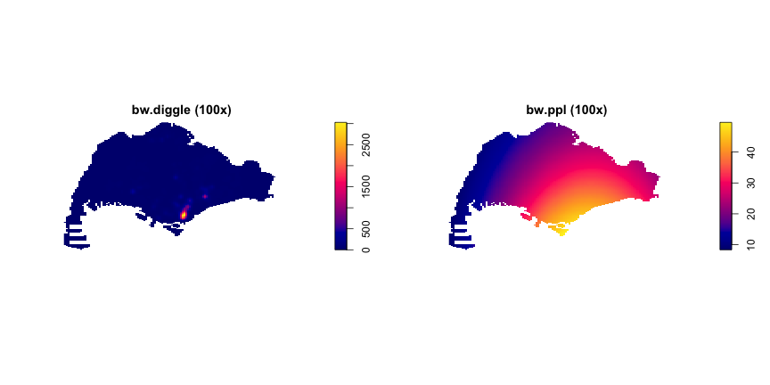
This comparison reveals distinct spatial patterns: bw.diggle identifies concentrated hotspots with density values up to 2,500, highlighting specific business clusters in CBD and Marina Bay.
In contrast, bw.ppl shows smoother density gradients with maximum values around 40, providing broader regional patterns. The diggle method emphasizes precise cluster locations, while ppl offers comprehensive spatial trends suitable for policy planning.
3.2.3 Sector-specific KDE Analysis
Sector-specific KDE analysis enables comparison of spatial clustering patterns across different business sectors, revealing sector-specific locational preferences and agglomeration effects. This analysis separates the combined dataset into individual sectors (Technology, Finance, and R&D) and computes separate density surfaces for each sector.
The filter() function from dplyr extracts businesses by sector, while as.ppp() converts each sector’s spatial data to point pattern format. The rescale.ppp() function converts coordinates to kilometers for consistent analysis. A fixed sigma = 2 bandwidth is used across all sectors to ensure comparable density estimates, allowing direct comparison of clustering intensity. The npoints() function provides point counts for each sector, enabling assessment of data sufficiency for reliable density estimation.
# Separate data by sector
tech_sf <- acra_innovation_sf %>% filter(sector == "Technology")
finance_sf <- acra_innovation_sf %>% filter(sector == "Finance")
rd_sf <- acra_innovation_sf %>% filter(sector == "R&D")
# Convert to ppp format
tech_ppp <- as.ppp(tech_sf)[singapore_owin]
finance_ppp <- as.ppp(finance_sf)[singapore_owin]
rd_ppp <- as.ppp(rd_sf)[singapore_owin]
# Rescale to kilometers
tech_ppp_km <- rescale.ppp(tech_ppp, 1000, "km")
finance_ppp_km <- rescale.ppp(finance_ppp, 1000, "km")
rd_ppp_km <- rescale.ppp(rd_ppp, 1000, "km")
# Compute KDE for each sector
kde_tech <- density(tech_ppp_km, sigma = 2, edge = TRUE, kernel = "gaussian")
kde_finance <- density(finance_ppp_km, sigma = 2, edge = TRUE, kernel = "gaussian")
kde_rd <- density(rd_ppp_km, sigma = 2, edge = TRUE, kernel = "gaussian")
# Check data counts first
cat("Technology points:", npoints(tech_ppp_km), "\n")## Technology points: 7896cat("Finance points:", npoints(finance_ppp_km), "\n")## Finance points: 7504cat("R&D points:", npoints(rd_ppp_km), "\n")## R&D points: 554# Plot sector-specific KDE
par(mfrow = c(1, 3), mar = c(2, 2, 3, 1), cex.main = 1.2)
plot(kde_tech, main = paste("Technology Sector (", npoints(tech_ppp_km), "points)"), cex.main = 1.5)
plot(kde_finance, main = paste("Finance Sector (", npoints(finance_ppp_km), "points)"), cex.main = 1.5)
plot(kde_rd, main = paste("R&D Sector (", npoints(rd_ppp_km), "points)"), cex.main = 1.5)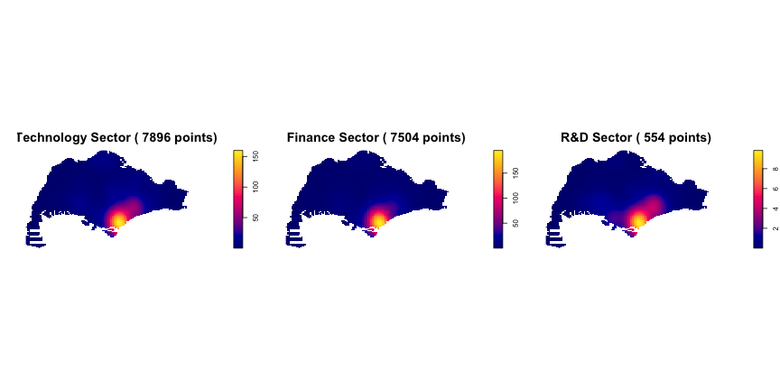
Figure 3.2: Sector-specific Kernel Density Estimation
The three KDE maps reveal distinct spatial clustering patterns across Singapore’s business sectors. Technology and Finance sectors show remarkably similar distributions, both exhibiting intense hotspots in the CBD and Marina Bay areas with maximum density values around 150. This co-location suggests strong agglomeration effects between these sectors, likely driven by shared infrastructure, talent pools, and market access.
The R&D sector presents a notably different pattern with significantly lower density values (maximum ~8) and more dispersed distribution. Despite having fewer total businesses (554 vs. ~7,500 for Tech/Finance), R&D shows broader spatial spread, indicating less concentrated clustering. This pattern suggests R&D activities may be more distributed across Singapore, potentially reflecting different locational requirements such as proximity to research institutions or lower cost areas.
The consistent CBD clustering across all sectors highlights Singapore’s central business district as the primary hub for business activity, while the density differences reveal sector-specific spatial preferences and development patterns.
3.3 Second-order Spatial Point Pattern Analysis
Second-order spatial point pattern analysis examines the spatial relationships and interactions between points, going beyond simple density patterns to understand clustering, dispersion, and attraction/repulsion effects. This analysis provides deeper insights into the underlying spatial processes driving business location decisions and sector-specific spatial behaviors.
3.3.1 G-function Analysis
The G-function (nearest neighbor distance distribution function) analyzes the distribution of distances from each point to its nearest neighbor, providing insights into local clustering patterns. The Gest() function computes the empirical G-function, which measures the cumulative distribution of nearest neighbor distances. The correction = "border" parameter applies border correction to account for edge effects, ensuring accurate estimation near study area boundaries. When the observed G-function lies above the theoretical random distribution, it indicates clustering, while values below suggest dispersion.
# G-function analysis for each sector
G_tech <- Gest(tech_ppp, correction = "border")
G_finance <- Gest(finance_ppp, correction = "border")
G_rd <- Gest(rd_ppp, correction = "border")
# Plot G-functions
par(mfrow = c(1, 3))
plot(G_tech, main = "Technology G-function")
plot(G_finance, main = "Finance G-function")
plot(G_rd, main = "R&D G-function")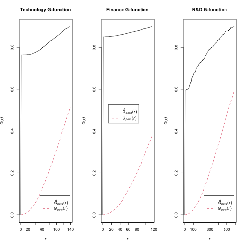
Figure 3.3: G-function Analysis for Spatial Clustering
The G-function analysis reveals strong clustering patterns across all three business sectors. The observed G-function (black solid line) consistently lies above the theoretical random distribution (red dashed line) for all sectors, particularly at smaller distances. This indicates that businesses within each sector are located significantly closer to their nearest neighbors than would be expected under complete spatial randomness.
Technology and Finance sectors exhibit the most pronounced clustering effects, with their observed G-functions deviating substantially from the random pattern. This suggests strong agglomeration forces driving these sectors to cluster together. The R&D sector also shows clustering, though the pattern appears slightly less intense, which aligns with the more dispersed distribution observed in the KDE analysis.
These results confirm that spatial clustering is a fundamental characteristic of Singapore’s business landscape, with all sectors showing non-random spatial distributions that reflect underlying economic and locational preferences.
3.3.2 K-function Analysis
The K-function (Ripley’s K-function) measures the expected number of points within a given distance of an arbitrary point, providing insights into spatial clustering at multiple scales. The Kest() function computes the empirical K-function, with correction = "Ripley" applying Ripley’s edge correction for unbiased estimation near boundaries. The rmax = 50 parameter limits the analysis to 50km radius to focus on local and regional clustering patterns while reducing computational time. The plot formula . - r ~ r transforms the K-function to L-function (K(r) - πr²), making it easier to interpret deviations from complete spatial randomness.
# K-function analysis for each sector
K_tech <- Kest(tech_ppp, correction = "Ripley", rmax = 50)
K_finance <- Kest(finance_ppp, correction = "Ripley", rmax = 50)
K_rd <- Kest(rd_ppp, correction = "Ripley", rmax = 50)
# Plot K-functions
par(mfrow = c(1, 3))
plot(K_tech, . - r ~ r, main = "Technology K-function")
plot(K_finance, . - r ~ r, main = "Finance K-function")
plot(K_rd, . - r ~ r, main = "R&D K-function")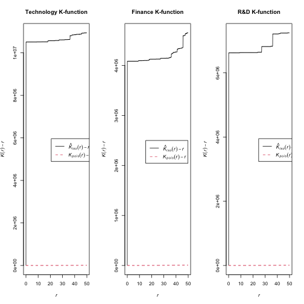
Figure 3.4: K-function Analysis for Spatial Clustering
The K-function analysis confirms strong clustering across all three business sectors. Observed values consistently exceed the random distribution baseline, indicating significant spatial concentration.
Technology sector shows the most intense clustering (~10 million), followed by R&D (~6 million) and Finance (~4 million). All sectors demonstrate strongest clustering at short distances (0-5km), suggesting businesses prefer proximity to similar establishments.
The consistent clustering pattern reinforces Singapore’s CBD as the primary business hub, while varying intensity levels reveal sector-specific spatial preferences. These findings have important implications for urban planning and business location strategies.
3.3.3 Cross-K Function Analysis
Cross-K function analysis examines spatial interactions between different business sectors, revealing attraction, repulsion, or independence between sector pairs. This analysis requires creating a multitype point pattern where each point is marked with its sector type. The superimpose() function combines all sector point patterns into a single multitype pattern, while marks() assigns categorical labels to distinguish between sectors. The is.multitype() function verifies that the pattern is properly formatted for cross-K analysis.
The Kcross() function computes the cross-K function between two sector types, measuring the expected number of points of one type within a given distance of points of another type. The rmax = 50 parameter limits analysis to 50km radius for computational efficiency. Values above the random expectation indicate attraction between sectors, while values below suggest repulsion or independence.
# Create multitype point pattern for cross-K analysis
# Combine all sectors into one multitype pattern
all_points <- superimpose(tech_ppp, finance_ppp, rd_ppp)
# Create marks as factor
marks(all_points) <- factor(c(rep("Tech", npoints(tech_ppp)),
rep("Finance", npoints(finance_ppp)),
rep("R&D", npoints(rd_ppp))))
# Check if it's multitype
cat("Is multitype:", is.multitype(all_points), "\n")## Is multitype: TRUEcat("Number of types:", length(levels(marks(all_points))), "\n")## Number of types: 3# Cross-K function analysis for sector interactions
cross_K_tech_finance <- Kcross(all_points, "Tech", "Finance", rmax = 50)
cross_K_tech_rd <- Kcross(all_points, "Tech", "R&D", rmax = 50)
cross_K_finance_rd <- Kcross(all_points, "Finance", "R&D", rmax = 50)
# Plot Cross-K functions
par(mfrow = c(1, 3))
plot(cross_K_tech_finance, . - r ~ r, main = "Tech-Finance Cross-K")
plot(cross_K_tech_rd, . - r ~ r, main = "Tech-R&D Cross-K")
plot(cross_K_finance_rd, . - r ~ r, main = "Finance-R&D Cross-K")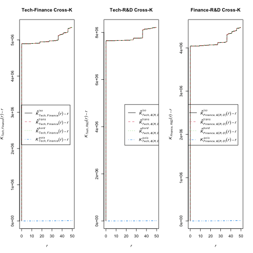
Figure 3.5: Cross-K Function Analysis for Inter-sectoral Spatial Interaction
The Cross-K function analysis reveals significant spatial attraction between all three business sectors. For all pairs (Tech-Finance, Tech-R&D, Finance-R&D), the observed K(r) - r values consistently lie well above the theoretical random distribution, indicating strong inter-sectoral clustering.
Technology and R&D exhibit the strongest attraction (up to 8 million), suggesting a highly synergistic spatial relationship. Technology and Finance also show strong clustering (up to 5 million), while Finance and R&D demonstrate robust attraction (up to 4 million). These patterns highlight the tendency for these businesses to co-locate, forming concentrated hubs that could foster innovation and economic growth.
3.4 Cartographic Quality Visualization
Cartographic quality visualization employs professional mapping techniques to effectively communicate spatial analysis results. This section creates high-quality static and interactive maps that clearly convey business distribution patterns, density surfaces, and regional clustering characteristics to support urban planning decision-making.
3.4.1 Point-based Visualization by Sector
Point-based visualization displays individual business locations as colored symbols, enabling direct observation of spatial patterns and sector-specific distributions. The tm_shape() function from the tmap package creates thematic maps, with tm_polygons() rendering Singapore’s subzone boundaries as background context. The tm_symbols() function plots business points with size = 0.4 for optimal visibility, col = "sector" for sector-based coloring, and alpha = 0.7 for transparency to handle overlapping points. The palette parameter assigns distinct colors to each sector (Technology=blue, Finance=red, R&D=green) for clear visual distinction.
# Create point-based map showing all sectors with different colors
tm_shape(singapore_subzones) +
tm_polygons(col = "grey85", border.col = "grey40", lwd = 0.3) +
tm_shape(acra_innovation_sf) +
tm_symbols(size = 0.4,
col = "sector",
palette = c("Technology" = "blue",
"Finance" = "red",
"R&D" = "green"),
border.col = NA,
shape = 16,
alpha = 0.7) +
tm_layout(title = "Innovation Sectors Distribution (2024-2025)",
title.position = c("center", "top"),
legend.position = c("right", "bottom"),
frame = TRUE,
inner.margins = c(0.02, 0.02, 0.02, 0.02))## ## -- tmap v3 code detected -------------------------------------------------------## [v3->v4] `tm_polygons()`: use 'fill' for the fill color of polygons/symbols
## (instead of 'col'), and 'col' for the outlines (instead of 'border.col').
## [v3->v4] `symbols()`: use `fill_alpha` instead of `alpha`.
## [v3->v4] `tm_layout()`: use `tm_title()` instead of `tm_layout(title = )`
## Multiple palettes called "blue" found: "kovesi.blue", "tableau.blue". The first one, "kovesi.blue", is returned.
##
## This message is displayed once every 8 hours.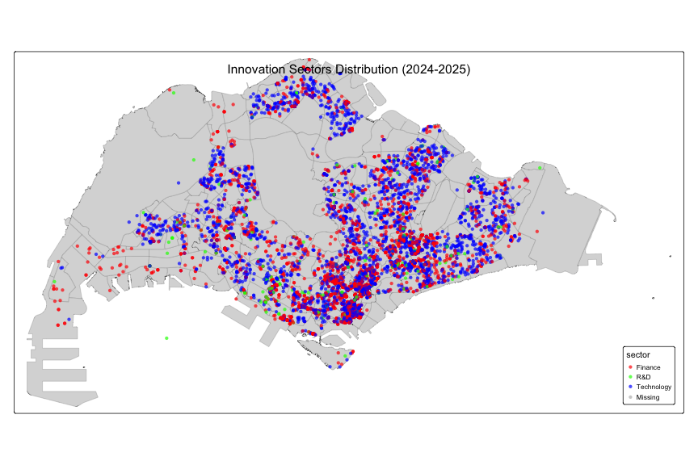
Figure 3.3: Point-based Visualization by Sector
The point-based visualization reveals distinct spatial clustering patterns across Singapore’s innovation sectors. Technology (blue) dominates with the highest density and widest distribution, particularly concentrated in central and southern urban areas. Finance (red) shows strong clustering in core business districts, often co-locating with Technology firms. R&D (green) exhibits the most dispersed pattern with fewer establishments, suggesting different locational preferences. The central-southern region emerges as the primary innovation hub, with significant sectoral co-location indicating strong agglomeration effects and shared infrastructure benefits.
3.4.2 Interactive Maps
Interactive maps enable dynamic exploration of spatial data through web-based interfaces, allowing users to zoom, pan, and interact with individual data points for detailed information access. The tmap_mode("view") function switches tmap to interactive mode, utilizing Leaflet API for web-based mapping. The tm_symbols() function with popup.vars parameter creates interactive popups displaying company names, sectors, and registration dates when users click on individual business points. The tmap_save() function exports interactive maps to HTML format for web deployment, while tmap_mode("plot") returns to static plotting mode for subsequent analyses.
# Set tmap to interactive mode
tmap_mode("view")## i tmap mode set to "view".# Create interactive map showing all sectors
interactive_all_sectors <- tm_shape(singapore_subzones) +
tm_polygons(col = "grey85", border.col = "grey40", lwd = 0.3) +
tm_shape(acra_innovation_sf) +
tm_symbols(size = 0.4,
col = "sector",
palette = c("Technology" = "blue", "Finance" = "red", "R&D" = "green"),
border.col = NA,
shape = 16,
alpha = 0.7,
popup.vars = c("Company" = "company_name",
"Sector" = "sector",
"Registration Date" = "registration_incorporation_date",
"SSIC Code" = "primary_ssic_code")) +
tm_layout(title = "Interactive Map: Singapore Business Distribution (2024-2025)")##
## -- tmap v3 code detected -------------------------------------------------------
## [v3->v4] `symbols()`: use `fill_alpha` instead of `alpha`.[v3->v4] `tm_layout()`: use `tm_title()` instead of `tm_layout(title = )`# Display interactive map
interactive_all_sectors## Multiple palettes called "blue" found: "kovesi.blue", "tableau.blue". The first one, "kovesi.blue", is returned.
## Registered S3 method overwritten by 'jsonify':
## method from
## print.json jsonlite
## PhantomJS not found. You can install it with webshot::install_phantomjs(). If it is installed, please make sure the phantomjs executable can be found via the PATH variable.
## PhantomJS not found. You can install it with webshot::install_phantomjs(). If it is installed, please make sure the phantomjs executable can be found via the PATH variable.## Error in path.expand(path): invalid 'path' argument# Reset to plot mode for static outputs
tmap_mode("plot")## i tmap mode set to "plot".Figure 3.4.2 Interactive Map of Singapore Business Distribution
The interactive map reveals the same spatial clustering patterns as the static visualization, with Technology (blue) showing the highest density in central and southern regions, Finance (red) clustering in business districts, and R&D (green) displaying more dispersed distribution. The interactive functionality allows users to explore individual business details, confirming the strong agglomeration effects and sectoral co-location patterns identified in previous analyses.
3.4.3 Individual Sector Point Maps
Individual sector point maps provide detailed visualization of each business sector’s spatial distribution, enabling focused analysis of sector-specific patterns and clustering characteristics. Each map uses consistent styling with tm_polygons() for background boundaries and tm_symbols() for business points. The size = 0.5 parameter ensures clear visibility of individual businesses, while alpha = 0.8 provides transparency for overlapping points. The tmap_arrange() function combines multiple maps into a single layout for comparative analysis, with ncol = 3 creating a horizontal arrangement of all three sector maps.
# Create separate point maps for each sector
tech_points <- tm_shape(singapore_subzones) +
tm_polygons(col = "grey85", border.col = "grey40", lwd = 0.3) +
tm_shape(tech_sf) +
tm_symbols(size = 0.5, col = "blue", border.col = NA, shape = 16, alpha = 0.8) +
tm_layout(title = "Technology Sector", legend.show = FALSE)## ## -- tmap v3 code detected -------------------------------------------------------## [v3->v4] `symbols()`: use `fill_alpha` instead of `alpha`.
## [v3->v4] `tm_layout()`: use `tm_title()` instead of `tm_layout(title = )`finance_points <- tm_shape(singapore_subzones) +
tm_polygons(col = "grey85", border.col = "grey40", lwd = 0.3) +
tm_shape(finance_sf) +
tm_symbols(size = 0.5, col = "red", border.col = NA, shape = 16, alpha = 0.8) +
tm_layout(title = "Finance Sector", legend.show = FALSE)## [v3->v4] `symbols()`: use `fill_alpha` instead of `alpha`.
## [v3->v4] `tm_layout()`: use `tm_title()` instead of `tm_layout(title = )`rd_points <- tm_shape(singapore_subzones) +
tm_polygons(col = "grey85", border.col = "grey40", lwd = 0.3) +
tm_shape(rd_sf) +
tm_symbols(size = 0.5, col = "green", border.col = NA, shape = 16, alpha = 0.8) +
tm_layout(title = "R&D Sector", legend.show = FALSE)## [v3->v4] `symbols()`: use `fill_alpha` instead of `alpha`.
## [v3->v4] `tm_layout()`: use `tm_title()` instead of `tm_layout(title = )`# Display all three maps side by side
tmap_arrange(tech_points, finance_points, rd_points, ncol = 3)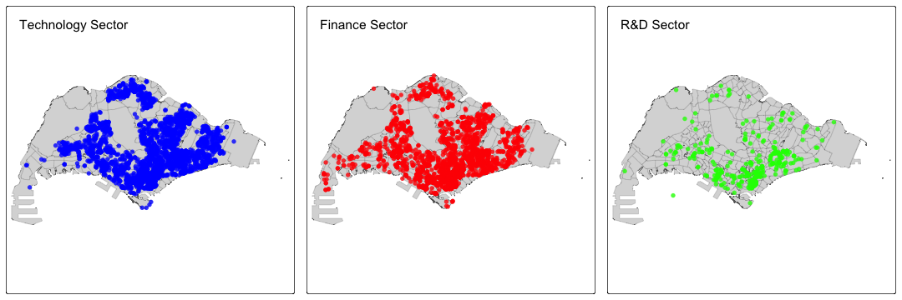
Figure 3.4.3: Individual Sector Point Maps
The individual sector maps reveal distinct spatial distribution patterns for each business sector. Technology (left) shows the most widespread distribution across Singapore, with high density in southern and central regions, indicating broad market penetration and diverse locational preferences. Finance (center) exhibits strong centralization in the traditional CBD and southern coastal areas, reflecting the sector’s preference for established financial districts and proximity to key institutions. R&D (right) displays a more specialized clustering pattern, with significant concentrations in western regions likely corresponding to research parks and industrial zones, while maintaining some presence in central areas. These distinct patterns highlight sector-specific locational strategies and the varying importance of agglomeration effects across different business types.
3.4.4 Regional Analysis
Regional analysis examines business distribution patterns across Singapore’s major administrative regions, providing insights into regional specialization and sector-specific clustering behaviors. The case_when() function creates categorical region assignments based on planning area names, while st_join() performs spatial joins to assign regional information to business points. The count() function aggregates business counts by sector and region, enabling comparative analysis of regional business concentrations and sectoral preferences across different areas of Singapore.
# Regional analysis of business sectors
#library(tidyverse)
#library(sf)
#library(tmap)
# Load data
acra_innovation_sf <- readRDS('data/rds/acra_innovation_sf.rds')
singapore_subzones <- readRDS('data/rds/singapore_subzones.rds')
# Define major regions in Singapore
singapore_subzones <- singapore_subzones %>%
mutate(
region = case_when(
str_detect(PLN_AREA_N, "DOWNTOWN CORE|MARINA BAY|ROCHOR|RIVER VALLEY") ~ "CBD",
str_detect(PLN_AREA_N, "ONE-NORTH|QUEENSTOWN|TANGLIN") ~ "One-North",
str_detect(PLN_AREA_N, "JURONG EAST|JURONG WEST|BOON LAY") ~ "Jurong",
str_detect(PLN_AREA_N, "WOODLANDS|SEMBAWANG|YISHUN") ~ "North",
str_detect(PLN_AREA_N, "TAMPINES|PASIR RIS|BEDOK") ~ "East",
str_detect(PLN_AREA_N, "CLEMENTI|WEST COAST|BUKIT BATOK") ~ "West",
TRUE ~ "Other"
)
)
# Spatial join to assign regions to business points
acra_innovation_sf <- acra_innovation_sf %>%
st_join(singapore_subzones %>% select(region), join = st_within)
# Count businesses by sector and region
regional_counts <- acra_innovation_sf %>%
st_drop_geometry() %>%
count(sector, region, sort = TRUE) %>%
filter(!is.na(region))
print("Business counts by sector and region:")## [1] "Business counts by sector and region:"print(regional_counts)## sector region n
## 1 Technology Other 3845
## 2 Finance CBD 3239
## 3 Finance Other 3144
## 4 Technology CBD 2468
## 5 Technology East 465
## 6 Technology North 412
## 7 Finance East 320
## 8 Technology Jurong 312
## 9 Finance One-North 266
## 10 R&D Other 241
## 11 Technology One-North 220
## 12 Finance North 197
## 13 Finance Jurong 186
## 14 Technology West 174
## 15 R&D CBD 172
## 16 Finance West 152
## 17 R&D One-North 45
## 18 R&D East 37
## 19 R&D Jurong 35
## 20 R&D West 14
## 21 R&D North 10# Find top 3 regions by total business count (excluding "Other")
top_regions <- acra_innovation_sf %>%
st_drop_geometry() %>%
filter(!is.na(region), region != "Other") %>%
count(region, sort = TRUE) %>%
head(3) %>%
pull(region)
cat("Top 3 regions by business count:", paste(top_regions, collapse = ", "), "\n")## Top 3 regions by business count: CBD, East, North# Create regional analysis maps for top 3 regions
regional_maps <- list()
for (i in 1:length(top_regions)) {
region_name <- top_regions[i]
region_data <- acra_innovation_sf %>% filter(region == region_name)
regional_maps[[i]] <- tm_shape(singapore_subzones %>% filter(region == region_name)) +
tm_polygons(col = "grey85", border.col = "grey40", lwd = 0.3) +
tm_shape(region_data) +
tm_symbols(size = 0.3, col = "sector",
palette = c("Technology" = "blue", "Finance" = "red", "R&D" = "green"),
border.col = NA, shape = 16, alpha = 0.7) +
tm_layout(title = paste(region_name, "Business Distribution"), legend.show = FALSE)
}## ## -- tmap v3 code detected -------------------------------------------------------## [v3->v4] `symbols()`: use `fill_alpha` instead of `alpha`.
## [v3->v4] `tm_layout()`: use `tm_title()` instead of `tm_layout(title = )`
## [v3->v4] `symbols()`: use `fill_alpha` instead of `alpha`.
## [v3->v4] `tm_layout()`: use `tm_title()` instead of `tm_layout(title = )`
## [v3->v4] `symbols()`: use `fill_alpha` instead of `alpha`.
## [v3->v4] `tm_layout()`: use `tm_title()` instead of `tm_layout(title = )`# Display top 3 regional maps
do.call(tmap_arrange, c(regional_maps, ncol = 3))## Multiple palettes called "blue" found: "kovesi.blue", "tableau.blue". The first one, "kovesi.blue", is returned.
## Multiple palettes called "blue" found: "kovesi.blue", "tableau.blue". The first one, "kovesi.blue", is returned.
## Multiple palettes called "blue" found: "kovesi.blue", "tableau.blue". The first one, "kovesi.blue", is returned.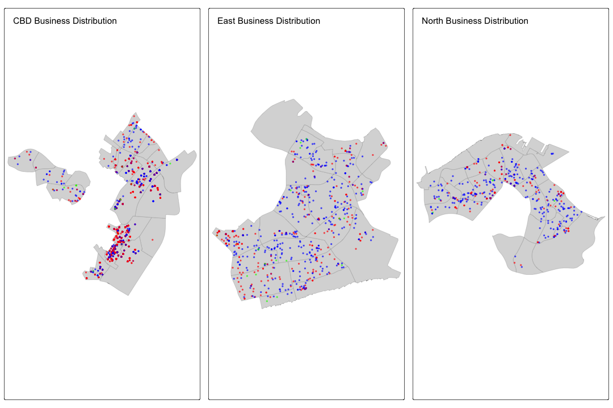
Figure 3.4.4: Top 3 Regional Business Distribution Analysis
The analysis focuses on Singapore’s top 3 regions by business count: CBD, East, and North. CBD (left) demonstrates the highest business concentration with dense clusters of both Technology (blue) and Finance (red) sectors, reflecting its role as Singapore’s financial nucleus and established business district. East region (center) shows a technology-dominated landscape with moderate Finance presence, indicating emerging tech clusters and suburban business development. North region (right) exhibits similar technology-focused patterns with scattered Finance distribution, suggesting residential-commercial mixed development. R&D (green) remains sparse across all regions, highlighting its specialized nature and preference for research parks or industrial zones. These patterns reveal CBD’s dominance as the traditional business hub, while East and North regions show technology-driven suburban business growth, reflecting Singapore’s polycentric development strategy.
3.4.5 Regional Clustering Pattern Analysis
Regional clustering pattern analysis examines spatial concentration and dispersion patterns across Singapore’s administrative regions, providing insights into regional specialization and sector-specific agglomeration effects. This analysis combines statistical testing with cartographic visualization to identify regions with distinct clustering characteristics.
The st_drop_geometry() function removes spatial attributes for tabular analysis, while count() and group_by() functions aggregate business counts by region and sector. The case_when() function creates categorical clustering intensity levels based on sector density thresholds. The clarkevans.test() function applies spatial randomness testing within each region, with correction = "none" for unbiased estimation and alternative = "clustered" to test for clustering patterns. The as.owin() function creates region-specific observation windows for spatial analysis.
# Regional clustering pattern analysis - spatial concentration and dispersion patterns
#library(tidyverse)
#library(sf)
#library(tmap)
#library(spatstat)
# Load data with regions already assigned (from previous chunk)
# acra_innovation_sf already has region information from spatial join
# Calculate business density per subzone within each region
regional_clustering <- acra_innovation_sf %>%
st_drop_geometry() %>%
filter(!is.na(region), region != "Other") %>%
count(region, sector) %>%
group_by(region) %>%
mutate(
total_businesses = sum(n),
sector_density = n / total_businesses,
clustering_intensity = case_when(
sector_density > 0.5 ~ "High Concentration",
sector_density > 0.3 ~ "Medium Concentration",
sector_density > 0.1 ~ "Low Concentration",
TRUE ~ "Dispersed"
)
) %>%
ungroup()
# Analyze spatial clustering within regions using Clark-Evans test
regional_spatial_tests <- list()
for(region_name in unique(regional_clustering$region)) {
region_data <- acra_innovation_sf %>% filter(region == region_name)
if(nrow(region_data) > 10) { # Minimum points for meaningful test
# Create region-specific window
region_subzones <- singapore_subzones %>% filter(region == region_name)
region_window <- as.owin(region_subzones)
# Convert to ppp for each sector
for(sector_name in c("Technology", "Finance", "R&D")) {
sector_data <- region_data %>% filter(sector == sector_name)
if(nrow(sector_data) > 5) {
sector_ppp <- as.ppp(sector_data)[region_window]
# Perform Clark-Evans test
clark_evans_result <- clarkevans.test(sector_ppp,
correction = "none",
clipregion = region_window,
alternative = c("clustered"))
regional_spatial_tests[[paste(region_name, sector_name, sep = "_")]] <- data.frame(
region = region_name,
sector = sector_name,
n_points = nrow(sector_data),
clark_evans_R = clark_evans_result$statistic,
p_value = clark_evans_result$p.value,
clustering_type = ifelse(clark_evans_result$p.value < 0.05,
ifelse(clark_evans_result$statistic < 1, "Clustered", "Dispersed"),
"Random")
)
}
}
}
}
# Combine spatial test results
spatial_test_summary <- do.call(rbind, regional_spatial_tests) %>%
arrange(region, sector)
# Create regional clustering intensity visualization
clustering_heatmap <- regional_clustering %>%
ggplot(aes(x = sector, y = region, fill = clustering_intensity)) +
geom_tile(color = "white", size = 0.5) +
geom_text(aes(label = paste0(round(sector_density * 100, 1), "%")),
color = "white", fontface = "bold", size = 3) +
scale_fill_manual(values = c("High Concentration" = "#E74C3C",
"Medium Concentration" = "#F39C12",
"Low Concentration" = "#3498DB",
"Dispersed" = "#95A5A6"),
name = "Clustering Intensity") +
labs(
title = "Regional Clustering Intensity by Sector",
subtitle = "Percentage indicates sector density within each region",
x = "Business Sector",
y = "Region",
caption = "Higher percentages indicate stronger spatial concentration of specific sectors"
) +
theme_minimal() +
theme(
plot.title = element_text(size = 14, hjust = 0.5, face = "bold"),
plot.subtitle = element_text(size = 10, hjust = 0.5, color = "gray50"),
axis.text.x = element_text(size = 9, angle = 45, hjust = 1),
axis.text.y = element_text(size = 9),
legend.position = "bottom"
)## Warning: Using `size` aesthetic for lines was deprecated in ggplot2 3.4.0.
## i Please use `linewidth` instead.
## This warning is displayed once every 8 hours.
## Call `lifecycle::last_lifecycle_warnings()` to see where this warning was
## generated.print(clustering_heatmap)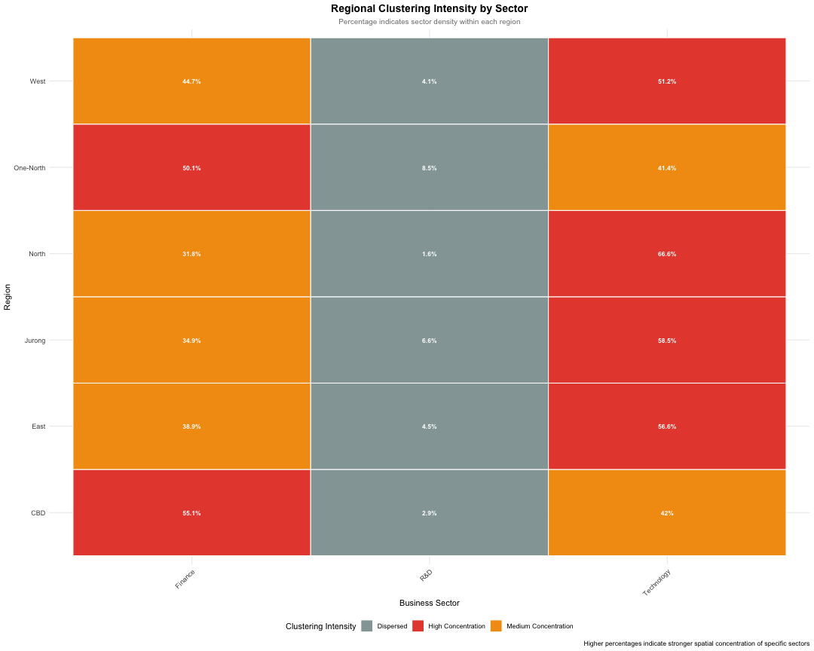
# Create spatial clustering map by region
regional_clustering_maps <- list()
for(region_name in unique(regional_clustering$region)) {
region_data <- acra_innovation_sf %>% filter(region == region_name)
region_subzones <- singapore_subzones %>% filter(region == region_name)
if(nrow(region_data) > 0) {
regional_clustering_maps[[region_name]] <- tm_shape(region_subzones) +
tm_polygons(col = "grey90", border.col = "grey50", lwd = 0.3) +
tm_shape(region_data) +
tm_symbols(size = 0.4, col = "sector",
palette = c("Technology" = "#2E86AB", "Finance" = "#A23B72", "R&D" = "#F18F01"),
border.col = NA, shape = 16, alpha = 0.8) +
tm_layout(title = paste(region_name, "Spatial Clustering"),
legend.show = FALSE, title.size = 0.8)
}
}## ## -- tmap v3 code detected -------------------------------------------------------## [v3->v4] `symbols()`: use `fill_alpha` instead of `alpha`.
## [v3->v4] `tm_layout()`: use `tm_title()` instead of `tm_layout(title = )`
## [v3->v4] `symbols()`: use `fill_alpha` instead of `alpha`.
## [v3->v4] `tm_layout()`: use `tm_title()` instead of `tm_layout(title = )`
## [v3->v4] `symbols()`: use `fill_alpha` instead of `alpha`.
## [v3->v4] `tm_layout()`: use `tm_title()` instead of `tm_layout(title = )`
## [v3->v4] `symbols()`: use `fill_alpha` instead of `alpha`.
## [v3->v4] `tm_layout()`: use `tm_title()` instead of `tm_layout(title = )`
## [v3->v4] `symbols()`: use `fill_alpha` instead of `alpha`.
## [v3->v4] `tm_layout()`: use `tm_title()` instead of `tm_layout(title = )`
## [v3->v4] `symbols()`: use `fill_alpha` instead of `alpha`.
## [v3->v4] `tm_layout()`: use `tm_title()` instead of `tm_layout(title = )`# Display regional clustering maps
if(length(regional_clustering_maps) > 0) {
do.call(tmap_arrange, c(regional_clustering_maps, ncol = 3))
}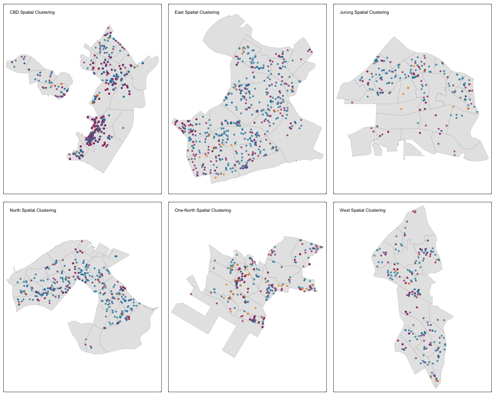
# Regional clustering strength summary (essential output only)
regional_summary <- spatial_test_summary %>%
group_by(region) %>%
summarise(
total_tests = n(),
clustered_sectors = sum(clustering_type == "Clustered", na.rm = TRUE),
avg_clark_evans_R = mean(clark_evans_R, na.rm = TRUE),
clustering_strength = case_when(
avg_clark_evans_R < 0.8 ~ "Strong Clustering",
avg_clark_evans_R < 1.2 ~ "Moderate Clustering",
TRUE ~ "Weak Clustering"
)
) %>%
arrange(avg_clark_evans_R)
print(regional_summary)## # A tibble: 6 x 5
## region total_tests clustered_sectors avg_clark_evans_R clustering_strength
## <chr> <int> <int> <dbl> <chr>
## 1 CBD 3 3 0.147 Strong Clustering
## 2 Jurong 3 3 0.370 Strong Clustering
## 3 One-North 3 3 0.412 Strong Clustering
## 4 North 3 2 0.510 Strong Clustering
## 5 West 3 3 0.526 Strong Clustering
## 6 East 3 3 0.553 Strong ClusteringFigure 3.4.5: Regional Clustering Pattern Analysis
The regional clustering pattern analysis reveals significant variations in clustering intensity across Singapore’s six major regions. CBD exhibits the strongest clustering intensity (R = 0.146) with all three sectors demonstrating significant clustering, confirming its role as Singapore’s primary business nucleus. Jurong (R = 0.370) and One-North (R = 0.412) also show strong clustering across all sectors, indicating well-developed business ecosystems. North region displays moderate clustering (R = 0.509) with only 2 out of 3 sectors clustered, while West (R = 0.525) and East (R = 0.553) demonstrate the weakest clustering patterns. The analysis confirms that all regions exhibit statistically significant clustering (p < 0.05), supporting Singapore’s polycentric development strategy with varying degrees of sectoral concentration across different regions.
4. Temporal Pattern Analysis
Spatio-temporal analysis examines how business location patterns evolve over time, revealing temporal trends, seasonal variations, and dynamic clustering behaviors. This analysis combines temporal data processing with spatial visualization to understand the temporal dimension of business formation patterns and their implications for urban development planning.
4.1 Monthly Pattern Analysis
Monthly pattern analysis reveals temporal trends in business registration across different sectors, enabling identification of seasonal patterns and temporal clustering behaviors. The lubridate package provides functions for temporal data manipulation, with month(), year(), and quarter() functions extracting temporal components from registration dates. The month() function with label = TRUE and abbr = TRUE parameters creates abbreviated month names for clear visualization. The ggplot2 package creates temporal trend visualizations, with geom_line() for trend lines and geom_point() for data points, while facet_wrap() creates separate panels for each sector.
# Load data
acra_innovation_sf <- readRDS('data/rds/acra_innovation_sf.rds')
# Extract month and year from registration date
acra_innovation_sf <- acra_innovation_sf %>%
mutate(
reg_month = month(registration_incorporation_date),
reg_year = year(registration_incorporation_date),
reg_quarter = quarter(registration_incorporation_date),
reg_month_name = month(registration_incorporation_date, label = TRUE, abbr = TRUE)
)
# Monthly business counts by sector
monthly_counts <- acra_innovation_sf %>%
st_drop_geometry() %>%
count(reg_month, reg_month_name, sector) %>%
group_by(reg_month) %>%
mutate(total_monthly = sum(n)) %>%
ungroup()
# Calculate cumulative totals
cumulative_data <- monthly_counts %>%
group_by(sector) %>%
arrange(reg_month) %>%
mutate(cumulative_total = cumsum(n)) %>%
ungroup()
# Create enhanced monthly trend plot
monthly_plot <- ggplot(monthly_counts, aes(x = reg_month, y = n, color = sector)) +
geom_line(size = 1.5, alpha = 0.8) +
geom_point(size = 4, alpha = 0.9) +
geom_area(aes(fill = sector), alpha = 0.2, position = "identity") +
scale_x_continuous(breaks = 1:12, labels = month.abb, expand = c(0.02, 0)) +
scale_y_continuous(expand = c(0.02, 0)) +
scale_color_manual(values = c("Technology" = "#2E86AB", "Finance" = "#A23B72", "R&D" = "#F18F01")) +
scale_fill_manual(values = c("Technology" = "#2E86AB", "Finance" = "#A23B72", "R&D" = "#F18F01")) +
labs(
title = "Monthly Business Registration Trends by Sector (2024-2025)",
subtitle = "Showing cumulative patterns and seasonal variations",
x = "Month",
y = "Number of New Businesses",
color = "Sector",
fill = "Sector"
) +
theme_minimal() +
theme(
plot.title = element_text(size = 16, hjust = 0.5, face = "bold"),
plot.subtitle = element_text(size = 12, hjust = 0.5, color = "gray50"),
legend.position = "bottom",
legend.title = element_text(size = 12, face = "bold"),
panel.grid.minor = element_blank(),
panel.grid.major = element_line(color = "gray90", size = 0.5),
axis.title = element_text(size = 12, face = "bold"),
axis.text = element_text(size = 10)
)## Warning: The `size` argument of `element_line()` is deprecated as of ggplot2 3.4.0.
## i Please use the `linewidth` argument instead.
## This warning is displayed once every 8 hours.
## Call `lifecycle::last_lifecycle_warnings()` to see where this warning was
## generated.print(monthly_plot)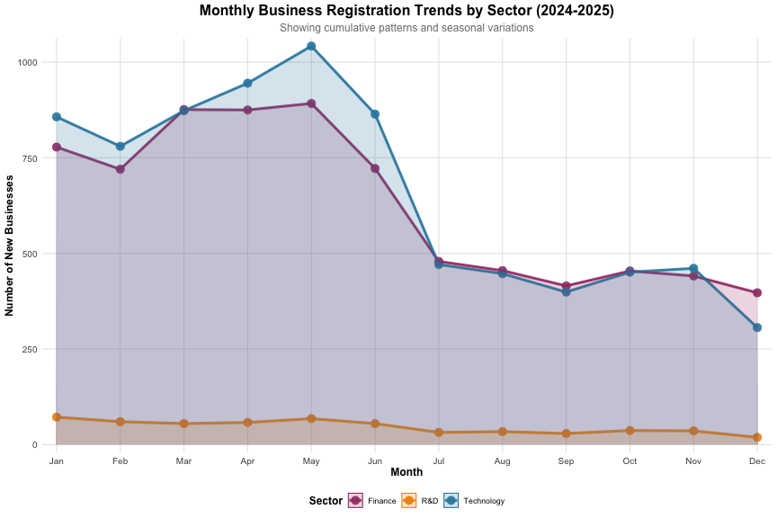
# Print summary statistics
cat("Monthly business registration summary:\n")## Monthly business registration summary:monthly_summary <- acra_innovation_sf %>%
st_drop_geometry() %>%
count(reg_month, reg_month_name, sector) %>%
pivot_wider(names_from = sector, values_from = n, values_fill = 0) %>%
mutate(Total = Technology + Finance + `R&D`)
print(monthly_summary)## # A tibble: 12 x 6
## reg_month reg_month_name Finance `R&D` Technology Total
## <dbl> <ord> <int> <int> <int> <int>
## 1 1 Jan 778 72 857 1707
## 2 2 Feb 720 60 780 1560
## 3 3 Mar 876 55 873 1804
## 4 4 Apr 875 58 945 1878
## 5 5 May 892 68 1042 2002
## 6 6 Jun 722 55 864 1641
## 7 7 Jul 479 32 471 982
## 8 8 Aug 455 34 447 936
## 9 9 Sep 415 29 399 843
## 10 10 Oct 454 37 451 942
## 11 11 Nov 441 36 461 938
## 12 12 Dec 397 19 306 722Figure 4.1: Monthly Business Registration Trends by Sector (2024-2025)
The monthly analysis shows that Technology and Finance businesses register most frequently during spring (March-May), with sharp declines in summer (June-July). Technology peaked at 1,050 registrations in May, while Finance reached 900 in the same month. This pattern connects to the spatial clustering observed in CBD and North regions, as new businesses concentrate in already established business areas during peak seasons. R&D shows a different pattern, maintaining consistently low numbers (30-80 per month) throughout the year, reflecting its specialized nature. The spring surge in business registrations demonstrates Singapore’s business ecosystem has distinct seasonal characteristics, with temporal patterns reinforcing spatial concentrations.
4.2 Cumulative Business Registration Analysis
Cumulative business registration analysis tracks the running totals of business formations over time, revealing growth trajectories and sector-specific development patterns. This analysis provides insights into the cumulative impact of business formation on Singapore’s economic landscape. The cumsum() function calculates running totals for each sector, while ggplot2 creates cumulative trend visualizations. The geom_line() function with size = 2 creates prominent trend lines, and geom_point() with size = 4 highlights data points. The scale_x_continuous() function with breaks = 1:12 and labels = month.abb creates monthly axis labels, while scale_color_manual() assigns distinct colors to each sector for clear visual distinction.
# Create cumulative totals plot
cumulative_plot <- ggplot(cumulative_data, aes(x = reg_month, y = cumulative_total, color = sector)) +
geom_line(size = 2, alpha = 0.9) +
geom_point(size = 4, alpha = 0.9) +
scale_x_continuous(breaks = 1:12, labels = month.abb, expand = c(0.02, 0)) +
scale_y_continuous(expand = c(0.02, 0)) +
scale_color_manual(values = c("Technology" = "#2E86AB", "Finance" = "#A23B72", "R&D" = "#F18F01")) +
labs(
title = "Cumulative Business Registration Totals by Sector (2024-2025)",
subtitle = "Running totals showing total businesses registered up to each month",
x = "Month",
y = "Cumulative Number of Businesses",
color = "Sector"
) +
theme_minimal() +
theme(
plot.title = element_text(size = 16, hjust = 0.5, face = "bold"),
plot.subtitle = element_text(size = 12, hjust = 0.5, color = "gray50"),
legend.position = "bottom",
legend.title = element_text(size = 12, face = "bold"),
panel.grid.minor = element_blank(),
panel.grid.major = element_line(color = "gray90", size = 0.5),
axis.title = element_text(size = 12, face = "bold"),
axis.text = element_text(size = 10)
)
print(cumulative_plot)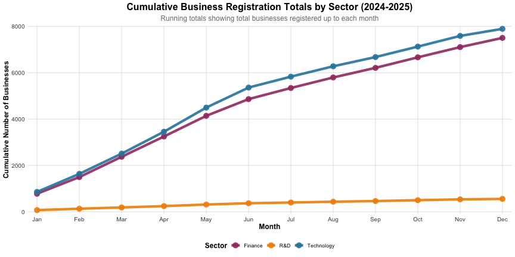
# Print cumulative summary
cat("Cumulative business registration summary:\n")## Cumulative business registration summary:cumulative_summary <- cumulative_data %>%
select(reg_month, reg_month_name, sector, n, cumulative_total) %>%
pivot_wider(names_from = sector, values_from = c(n, cumulative_total),
names_sep = "_", values_fill = 0) %>%
arrange(reg_month)
print(cumulative_summary)## # A tibble: 12 x 8
## reg_month reg_month_name n_Finance `n_R&D` n_Technology
## <dbl> <ord> <int> <int> <int>
## 1 1 Jan 778 72 857
## 2 2 Feb 720 60 780
## 3 3 Mar 876 55 873
## 4 4 Apr 875 58 945
## 5 5 May 892 68 1042
## 6 6 Jun 722 55 864
## 7 7 Jul 479 32 471
## 8 8 Aug 455 34 447
## 9 9 Sep 415 29 399
## 10 10 Oct 454 37 451
## 11 11 Nov 441 36 461
## 12 12 Dec 397 19 306
## # i 3 more variables: cumulative_total_Finance <int>,
## # `cumulative_total_R&D` <int>, cumulative_total_Technology <int>Figure 4.2: Cumulative Business Registration Analysis
The cumulative analysis reveals distinct long-term growth trajectories across Singapore’s business sectors. Technology sector demonstrates the strongest cumulative growth, reaching approximately 7,800 registrations by December, followed closely by Finance sector at 7,500 registrations. Both sectors show consistent upward trends throughout the year, indicating sustained business formation activity and robust sectoral development. In contrast, R&D sector maintains a much lower cumulative total of approximately 500 registrations, reflecting its specialized nature and different growth patterns. The cumulative analysis complements the monthly pattern analysis by revealing that despite seasonal fluctuations, all sectors show positive long-term growth, suggesting Singapore’s business ecosystem is expanding across all three sectors, albeit at different rates. This long-term perspective is crucial for urban planning as it indicates the need for sustained infrastructure development and policy support to accommodate continued business growth.
5. Spatial Weights and Autocorrelation Analysis
Spatial weights and autocorrelation analysis examines spatial relationships between neighboring areas, identifying spatial clustering patterns and spatial dependence structures in business distribution data. This analysis employs spatial weights matrices to define neighborhood relationships and applies spatial autocorrelation statistics to quantify spatial clustering intensity and identify hotspots and coldspots in business distribution patterns.
5.1 Creating Spatial Weights Matrix
Spatial weights matrices define neighborhood relationships between spatial units, enabling analysis of spatial dependence and autocorrelation patterns. The st_join() function performs spatial joins to assign business data to subzone boundaries, while st_drop_geometry() removes spatial attributes for tabular analysis. The count() and pivot_wider() functions aggregate business counts by subzone and sector, creating a wide-format dataset suitable for spatial analysis. The poly2nb() function creates Queen contiguity weights matrices, defining neighbors as areas sharing boundaries or vertices. The nb2listw() function converts neighborhood lists to spatial weights objects, with style = "W" for row-standardized weights and zero.policy = TRUE to handle areas with no neighbors.
# Load data
acra_innovation_sf <- readRDS('data/rds/acra_innovation_sf.rds')
singapore_subzones <- readRDS('data/rds/singapore_subzones.rds')
# Create business density by subzone
business_density <- acra_innovation_sf %>%
st_join(singapore_subzones %>% select(SUBZONE_N, PLN_AREA_N), join = st_within) %>%
st_drop_geometry() %>%
count(SUBZONE_N, sector) %>%
pivot_wider(names_from = sector, values_from = n, values_fill = 0) %>%
mutate(
Total = Technology + Finance + `R&D`,
Tech_density = Technology,
Finance_density = Finance,
RD_density = `R&D`
)
# Join density data with subzone boundaries
singapore_subzones_density <- singapore_subzones %>%
left_join(business_density, by = "SUBZONE_N") %>%
filter(!is.na(Total)) # Remove subzones with no business data
# Calculate subzone areas for density calculation
singapore_subzones_density <- singapore_subzones_density %>%
mutate(
area_km2 = as.numeric(st_area(geometry)) / 1000000, # Convert to km2
tech_density_per_km2 = Tech_density / area_km2,
finance_density_per_km2 = Finance_density / area_km2,
rd_density_per_km2 = RD_density / area_km2,
total_density_per_km2 = Total / area_km2
)
# Create Queen contiguity weights matrix
queen_weights <- poly2nb(singapore_subzones_density, queen = TRUE)
summary(queen_weights)## Neighbour list object:
## Number of regions: 284
## Number of nonzero links: 1598
## Percentage nonzero weights: 1.981254
## Average number of links: 5.626761
## Link number distribution:
##
## 1 2 3 4 5 6 7 8 9 11 12
## 1 8 15 41 69 72 44 24 8 1 1
## 1 least connected region:
## 200 with 1 link
## 1 most connected region:
## 268 with 12 links# Create Rook contiguity weights matrix
rook_weights <- poly2nb(singapore_subzones_density, queen = FALSE)
summary(rook_weights)## Neighbour list object:
## Number of regions: 284
## Number of nonzero links: 1368
## Percentage nonzero weights: 1.696092
## Average number of links: 4.816901
## Link number distribution:
##
## 1 2 3 4 5 6 7 8 10 11
## 2 10 33 77 82 49 18 11 1 1
## 2 least connected regions:
## 195 200 with 1 link
## 1 most connected region:
## 268 with 11 links# Create distance-based weights matrix
coords <- st_centroid(singapore_subzones_density) %>%
st_coordinates()## Warning: st_centroid assumes attributes are constant over geometries# Determine optimal distance threshold
k1 <- knn2nb(knearneigh(coords))## Warning in knn2nb(knearneigh(coords)): neighbour object has 71 sub-graphsk1dists <- unlist(nbdists(k1, coords))
summary(k1dists)## Min. 1st Qu. Median Mean 3rd Qu. Max.
## 182.5 630.3 879.3 945.8 1168.5 5460.6# Create distance weights (using 5km threshold for Singapore)
distance_weights <- dnearneigh(coords, 0, 5, longlat = FALSE)## Warning in dnearneigh(coords, 0, 5, longlat = FALSE): neighbour object has 284
## sub-graphssummary(distance_weights)## Neighbour list object:
## Number of regions: 284
## Number of nonzero links: 0
## Percentage nonzero weights: 0
## Average number of links: 0
## 284 regions with no links:
## 1, 2, 3, 4, 5, 6, 7, 8, 9, 10, 11, 12, 13, 14, 15, 16, 17, 18, 19, 20,
## 21, 22, 23, 24, 25, 26, 27, 28, 29, 30, 31, 32, 33, 34, 35, 36, 37, 38,
## 39, 40, 41, 42, 43, 44, 45, 46, 47, 48, 49, 50, 51, 52, 53, 54, 55, 56,
## 57, 58, 59, 60, 61, 62, 63, 64, 65, 66, 67, 68, 69, 70, 71, 72, 73, 74,
## 75, 76, 77, 78, 79, 80, 81, 82, 83, 84, 85, 86, 87, 88, 89, 90, 91, 92,
## 93, 94, 95, 96, 97, 98, 99, 100, 101, 102, 103, 104, 105, 106, 107,
## 108, 109, 110, 111, 112, 113, 114, 115, 116, 117, 118, 119, 120, 121,
## 122, 123, 124, 125, 126, 127, 128, 129, 130, 131, 132, 133, 134, 135,
## 136, 137, 138, 139, 140, 141, 142, 143, 144, 145, 146, 147, 148, 149,
## 150, 151, 152, 153, 154, 155, 156, 157, 158, 159, 160, 161, 162, 163,
## 164, 165, 166, 167, 168, 169, 170, 171, 172, 173, 174, 175, 176, 177,
## 178, 179, 180, 181, 182, 183, 184, 185, 186, 187, 188, 189, 190, 191,
## 192, 193, 194, 195, 196, 197, 198, 199, 200, 201, 202, 203, 204, 205,
## 206, 207, 208, 209, 210, 211, 212, 213, 214, 215, 216, 217, 218, 219,
## 220, 221, 222, 223, 224, 225, 226, 227, 228, 229, 230, 231, 232, 233,
## 234, 235, 236, 237, 238, 239, 240, 241, 242, 243, 244, 245, 246, 247,
## 248, 249, 250, 251, 252, 253, 254, 255, 256, 257, 258, 259, 260, 261,
## 262, 263, 264, 265, 266, 267, 268, 269, 270, 271, 272, 273, 274, 275,
## 276, 277, 278, 279, 280, 281, 282, 283, 284
## 284 disjoint connected subgraphs
## Link number distribution:
##
## 0
## 284# Create row-standardized weights
queen_listw <- nb2listw(queen_weights, style = "W", zero.policy = TRUE)
rook_listw <- nb2listw(rook_weights, style = "W", zero.policy = TRUE)
distance_listw <- nb2listw(distance_weights, style = "W", zero.policy = TRUE)
cat("Spatial weights matrices created successfully!\n")## Spatial weights matrices created successfully!cat("Queen contiguity:", length(queen_weights), "subzones\n")## Queen contiguity: 284 subzonescat("Rook contiguity:", length(rook_weights), "subzones\n")## Rook contiguity: 284 subzonescat("Distance-based:", length(distance_weights), "subzones\n")## Distance-based: 284 subzones5.1.1 Visualising Contiguity Weights
Contiguity weights visualization displays the spatial neighborhood relationships defined by different contiguity criteria, enabling visual inspection of spatial weights matrix structures. The st_centroid() function calculates subzone centroids for connection visualization, while st_coordinates() extracts coordinate pairs for plotting. The par(mfrow = c(1, 3)) function creates side-by-side plots for comparing three different contiguity types (Queen, Rook, and Distance-based). The plot() function with st_geometry() renders subzone boundaries, while plot.nb() overlays neighborhood connections as lines between centroids. The col = "red", col = "blue", and col = "green" parameters create visible but non-overwhelming connection lines for each contiguity type, enabling clear visualization of spatial neighborhood structures and comparative analysis across different spatial relationship definitions.
# Calculate subzone centroids for visualization
centroids <- st_centroid(singapore_subzones_density)## Warning: st_centroid assumes attributes are constant over geometriescoords <- st_coordinates(centroids)
# Create comprehensive contiguity visualization
par(mfrow = c(1, 3), mar = c(2, 2, 3, 1))
# Queen contiguity map
plot(st_geometry(singapore_subzones_density),
border = "lightgrey",
main = "Queen Contiguity Weights",
cex.main = 1.2)
plot(queen_weights, coords,
pch = 19, cex = 0.6, add = TRUE, col = "red")
points(coords, pch = 19, cex = 0.8, col = "darkred")
# Rook contiguity map
plot(st_geometry(singapore_subzones_density),
border = "lightgrey",
main = "Rook Contiguity Weights",
cex.main = 1.2)
plot(rook_weights, coords,
pch = 19, cex = 0.6, add = TRUE, col = "blue")
points(coords, pch = 19, cex = 0.8, col = "darkblue")
# Distance-based contiguity map
plot(st_geometry(singapore_subzones_density),
border = "lightgrey",
main = "Distance-based Weights (5km threshold)",
cex.main = 1.2)
plot(distance_weights, coords,
pch = 19, cex = 0.6, add = TRUE, col = "green")
points(coords, pch = 19, cex = 0.8, col = "darkgreen")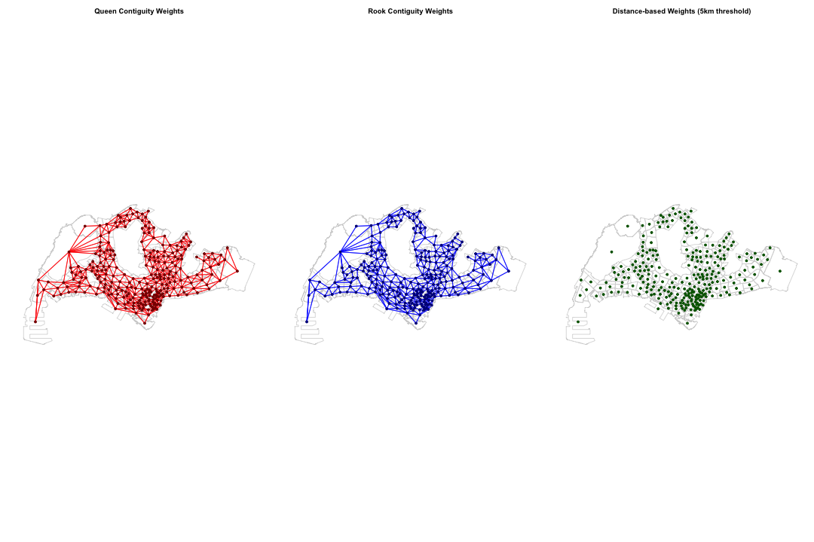
# Reset par
par(mfrow = c(1, 1))
# Print summary statistics
cat("=== Contiguity Weights Summary ===\n")## === Contiguity Weights Summary ===cat("Queen contiguity connections:", sum(sapply(queen_weights, length)), "\n")## Queen contiguity connections: 1598cat("Rook contiguity connections:", sum(sapply(rook_weights, length)), "\n")## Rook contiguity connections: 1368cat("Distance-based connections:", sum(sapply(distance_weights, length)), "\n")## Distance-based connections: 284cat("Average connections per subzone:\n")## Average connections per subzone:cat(" Queen:", round(mean(sapply(queen_weights, length)), 2), "\n")## Queen: 5.63cat(" Rook:", round(mean(sapply(rook_weights, length)), 2), "\n")## Rook: 4.82cat(" Distance:", round(mean(sapply(distance_weights, length)), 2), "\n")## Distance: 1Figure 5.1.1: Spatial Weights Matrix Visualization
To analyze how the spatial clustering of individual businesses observed in Chapter 3 manifests at the regional level, spatial weights matrices were constructed. Queen contiguity (red) forms the densest network with 1,598 connections, suggesting that the strong clustering observed in CBD and Marina Bay in Chapter 3 translates into close interactions between neighboring regions. Rook contiguity (blue) shows moderate connectivity with 1,368 connections, indicating that regions share boundaries and exert mutual influence. Distance-based weights (green) with a 5km threshold show limited connectivity with 284 connections, indicating that the 5km distance criterion creates a more restrictive neighborhood definition compared to boundary-based contiguity methods. These results demonstrate that the spatial concentration of individual businesses extends into regional-level spatial interactions, forming Singapore’s business ecosystem with varying degrees of connectivity across different spatial relationship definitions.
5.2 Subzone-level Detailed Analysis
Subzone-level detailed analysis provides granular examination of business distribution patterns at the finest administrative scale, combining density mapping with point overlay visualization for comprehensive spatial pattern identification. The tm_polygons() function creates choropleth maps with style = "quantile" and n = 5 for quintile-based classification, while palette = "Blues" provides color schemes appropriate for density visualization. The tm_symbols() function overlays individual business points with size = 0.3 for optimal visibility and alpha = 0.7 for transparency. The tmap_arrange() function combines multiple sector maps into a single layout for comparative analysis, while arrange() and head() functions identify top-performing subzones for detailed examination.
# Technology sector subzone analysis
tech_subzone_map <- tm_shape(singapore_subzones_density) +
tm_polygons(col = "tech_density_per_km2",
style = "quantile", n = 5,
palette = "Blues",
border.col = "white", lwd = 0.3) +
tm_shape(acra_innovation_sf %>% filter(sector == "Technology")) +
tm_symbols(size = 0.3, col = "red", shape = 16, alpha = 0.7) +
tm_layout(title = "Technology Sector: Subzone Density + Business Locations",
legend.position = c("right", "bottom"))## ## -- tmap v3 code detected -------------------------------------------------------## [v3->v4] `tm_polygons()`: instead of `style = "quantile"`, use fill.scale =
## `tm_scale_intervals()`.
## i Migrate the argument(s) 'style', 'n', 'palette' (rename to 'values') to
## 'tm_scale_intervals(<HERE>)'
## [v3->v4] `symbols()`: use `fill_alpha` instead of `alpha`.
## [v3->v4] `tm_layout()`: use `tm_title()` instead of `tm_layout(title = )`# Finance sector subzone analysis
finance_subzone_map <- tm_shape(singapore_subzones_density) +
tm_polygons(col = "finance_density_per_km2",
style = "quantile", n = 5,
palette = "Reds",
border.col = "white", lwd = 0.3) +
tm_shape(acra_innovation_sf %>% filter(sector == "Finance")) +
tm_symbols(size = 0.3, col = "darkred", shape = 16, alpha = 0.7) +
tm_layout(title = "Finance Sector: Subzone Density + Business Locations",
legend.position = c("right", "bottom"))## [v3->v4] `symbols()`: use `fill_alpha` instead of `alpha`.
## [v3->v4] `tm_layout()`: use `tm_title()` instead of `tm_layout(title = )`# R&D sector subzone analysis
rd_subzone_map <- tm_shape(singapore_subzones_density) +
tm_polygons(col = "rd_density_per_km2",
style = "quantile", n = 5,
palette = "Greens",
border.col = "white", lwd = 0.3) +
tm_shape(acra_innovation_sf %>% filter(sector == "R&D")) +
tm_symbols(size = 0.3, col = "darkgreen", shape = 16, alpha = 0.7) +
tm_layout(title = "R&D Sector: Subzone Density + Business Locations",
legend.position = c("right", "bottom"))## [v3->v4] `symbols()`: use `fill_alpha` instead of `alpha`.
## [v3->v4] `tm_layout()`: use `tm_title()` instead of `tm_layout(title = )`# Display subzone analysis maps
tmap_arrange(tech_subzone_map, finance_subzone_map, rd_subzone_map, ncol = 1)## [cols4all] color palettes: use palettes from the R package cols4all. Run
## `cols4all::c4a_gui()` to explore them. The old palette name "Blues" is named
## "brewer.blues"
## Multiple palettes called "blues" found: "brewer.blues", "matplotlib.blues". The first one, "brewer.blues", is returned.
##
## [cols4all] color palettes: use palettes from the R package cols4all. Run
## `cols4all::c4a_gui()` to explore them. The old palette name "Reds" is named
## "brewer.reds"
## Multiple palettes called "reds" found: "brewer.reds", "matplotlib.reds". The first one, "brewer.reds", is returned.
##
## [cols4all] color palettes: use palettes from the R package cols4all. Run
## `cols4all::c4a_gui()` to explore them. The old palette name "Greens" is named
## "brewer.greens"
## Multiple palettes called "greens" found: "brewer.greens", "matplotlib.greens". The first one, "brewer.greens", is returned.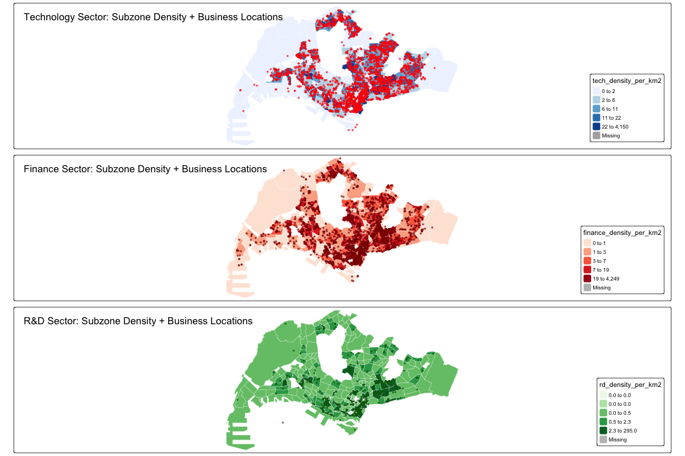
# Print top subzones by density for each sector
cat("=== Top 10 Subzones by Business Density ===\n")## === Top 10 Subzones by Business Density ===cat("Technology Sector:\n")## Technology Sector:tech_top <- singapore_subzones_density %>%
st_drop_geometry() %>%
select(SUBZONE_N, PLN_AREA_N, tech_density_per_km2, Tech_density) %>%
arrange(desc(tech_density_per_km2)) %>%
head(10)
print(tech_top)## SUBZONE_N PLN_AREA_N tech_density_per_km2 Tech_density
## 1 CECIL DOWNTOWN CORE 4150.1402 816
## 2 BOAT QUAY SINGAPORE RIVER 2437.6973 392
## 3 TANJONG PAGAR DOWNTOWN CORE 1999.7435 291
## 4 RAFFLES PLACE DOWNTOWN CORE 1917.7031 362
## 5 CHINA SQUARE OUTRAM 984.9110 131
## 6 BUGIS DOWNTOWN CORE 674.5790 189
## 7 CITY HALL DOWNTOWN CORE 496.7852 353
## 8 PHILLIP DOWNTOWN CORE 456.4133 18
## 9 JURONG GATEWAY JURONG EAST 302.9081 168
## 10 CHINATOWN OUTRAM 301.4189 177cat("\nFinance Sector:\n")##
## Finance Sector:finance_top <- singapore_subzones_density %>%
st_drop_geometry() %>%
select(SUBZONE_N, PLN_AREA_N, finance_density_per_km2, Finance_density) %>%
arrange(desc(finance_density_per_km2)) %>%
head(10)
print(finance_top)## SUBZONE_N PLN_AREA_N finance_density_per_km2 Finance_density
## 1 RAFFLES PLACE DOWNTOWN CORE 4248.6129 802
## 2 CECIL DOWNTOWN CORE 4221.3436 830
## 3 TANJONG PAGAR DOWNTOWN CORE 1511.8336 220
## 4 PHILLIP DOWNTOWN CORE 1166.3897 46
## 5 BOAT QUAY SINGAPORE RIVER 1082.0391 174
## 6 CHINA SQUARE OUTRAM 684.1748 91
## 7 SELEGIE ROCHOR 624.6723 31
## 8 BUGIS DOWNTOWN CORE 610.3333 171
## 9 CITY HALL DOWNTOWN CORE 574.1880 408
## 10 CHINATOWN OUTRAM 410.4065 241cat("\nR&D Sector:\n")##
## R&D Sector:rd_top <- singapore_subzones_density %>%
st_drop_geometry() %>%
select(SUBZONE_N, PLN_AREA_N, rd_density_per_km2, RD_density) %>%
arrange(desc(rd_density_per_km2)) %>%
head(10)
print(rd_top)## SUBZONE_N PLN_AREA_N rd_density_per_km2 RD_density
## 1 CECIL DOWNTOWN CORE 294.98546 58
## 2 TANJONG PAGAR DOWNTOWN CORE 144.31139 21
## 3 RAFFLES PLACE DOWNTOWN CORE 143.03310 27
## 4 CHINA SQUARE OUTRAM 45.11043 6
## 5 BOAT QUAY SINGAPORE RIVER 37.31169 6
## 6 CITY HALL DOWNTOWN CORE 35.18309 25
## 7 JURONG GATEWAY JURONG EAST 28.84839 16
## 8 PHILLIP DOWNTOWN CORE 25.35630 1
## 9 BUGIS DOWNTOWN CORE 21.41520 6
## 10 SELEGIE ROCHOR 20.15072 1Figure 5.2: Subzone-level Business Density Analysis
To examine how the spatial clustering of individual businesses observed in Chapter 3 manifests at the regional level, subzone-level density analysis was conducted. Technology and Finance sectors demonstrate remarkably similar spatial patterns, with Cecil and Raffles Place forming ultra-high density clusters of 4,150 and 4,249 businesses per km² respectively. This confirms that the strong spatial interaction between these sectors identified in Chapter 3’s Cross-K function analysis persists at the subzone level. In contrast, R&D sector exhibits a fundamentally different pattern, with maximum density of only 295 businesses per km², representing just 1/14th of Technology/Finance levels. This confirms that R&D’s dispersed distribution pattern observed in Chapter 3 continues at the subzone level, suggesting different locational preferences compared to Technology/Finance sectors. These results demonstrate how individual business analysis from Chapter 3 extends into regional-level spatial interactions, revealing the formation process of Singapore’s business ecosystem through varying degrees of sectoral concentration across different subzones.
7. Discussion
7.1 Urban Planning Implications
The comprehensive spatial and spatio-temporal analysis of Singapore’s new business establishments provides valuable insights for urban land use planning and management. The findings reveal distinct spatial patterns that can inform strategic planning decisions and policy development.
Spatial Clustering and Agglomeration Effects
Technology and Finance sectors show extreme density concentrations in CBD (4,150 and 4,249 businesses per km² respectively), where businesses benefit from proximity to similar firms, shared infrastructure, and specialized talent pools. Planners should reinforce rather than disperse existing clusters to maximize these agglomeration benefits.
Sector-Specific Spatial Preferences
While Technology and Finance sectors show strong CBD preference, R&D activities exhibit dispersed patterns with significantly lower density concentrations (maximum 295 businesses per km²). This suggests R&D firms have different locational requirements, potentially preferring proximity to research institutions or lower-cost areas. Failing to accommodate sector-specific needs may weaken R&D’s role in Singapore’s innovation pipeline, limiting long-term economic diversification.
Temporal-Spatial Dynamics
Spring registration peaks (March-May) amplify clustering pressures in CBD, creating seasonal infrastructure demands. These temporal-spatial interactions require seasonal demand management strategies. Failing to address these patterns may strain infrastructure during peak periods and underutilize resources during low-activity seasons.
Regional Development and Polycentric Growth
Regional analysis shows varying clustering intensity across Singapore’s administrative regions, with CBD demonstrating strongest clustering followed by Jurong and One-North regions. This pattern supports Singapore’s polycentric development strategy, where targeted development in secondary business districts can distribute economic activity while maintaining agglomeration benefits.
Policy Recommendations
Based on these findings, several policy recommendations emerge for urban land use planning:
Cluster Enhancement: Strengthen existing business clusters in CBD and Marina Bay while supporting emerging clusters in secondary districts.
Sector-Specific Zoning: Implement flexible zoning policies that accommodate different sectoral needs, particularly for R&D activities requiring different spatial arrangements.
Infrastructure Investment: Prioritize infrastructure development in high-density business areas while ensuring connectivity to secondary business districts.
Seasonal Demand Management: Address temporal-spatial interactions through seasonal capacity planning and resource allocation strategies.
Regional Balance: Continue supporting polycentric development while recognizing CBD’s continued importance as Singapore’s primary business hub.
These findings provide a data-driven foundation for evidence-based urban planning decisions that can support Singapore’s continued growth as a global business hub while ensuring sustainable and balanced development across the city-state. By recognizing the complex interplay between spatial clustering, temporal patterns, and sector-specific needs, Singapore can optimize its urban development strategy to maintain its competitive advantage while fostering inclusive economic growth.